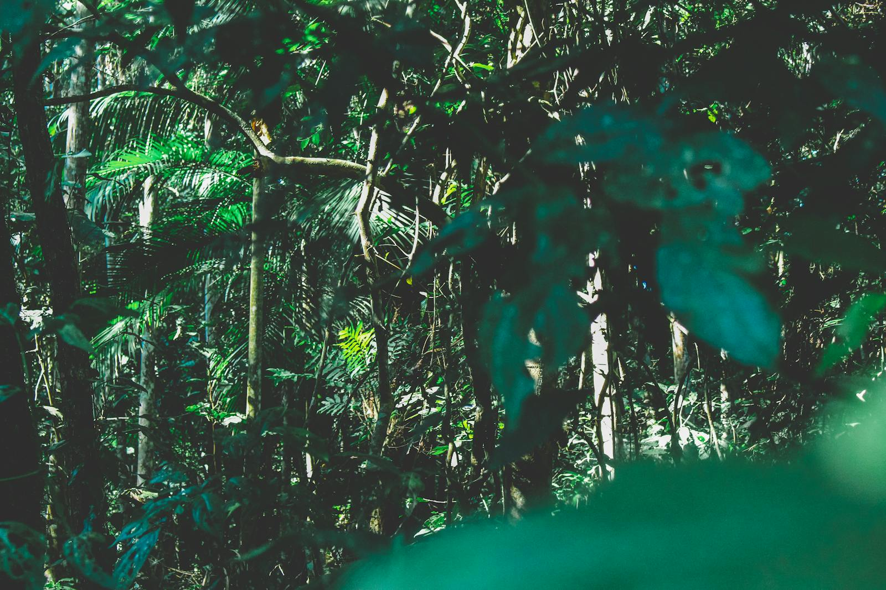

Our Story
Founded in 2005, Pacific Trails Resort was born from a simple vision: to create a sanctuary where modern luxury meets the raw beauty of the California coast. Our founders, longtime enthusiasts of both adventure and relaxation, sought to build more than just a vacation destination—they wanted to craft an experience that would reconnect guests with nature without sacrificing comfort.
Nestled along the breathtaking Big Sur coastline, our resort offers a unique blend of coastal charm and wilderness adventure. Each luxury yurt provides panoramic ocean views, allowing guests to fall asleep to the sound of crashing waves and wake up to stunning sunrises painting the Pacific.
Our Mission
At Pacific Trails, sustainability is at the heart of everything we do. We carefully manage our environmental footprint through renewable energy initiatives, water conservation practices, and partnerships with local conservation efforts. Our commitment extends beyond our property to preserving the pristine coastal ecosystems that make our location so special.
We believe that true relaxation comes from immersing oneself in natural surroundings while enjoying thoughtful amenities. Every decision we make reflects our dedication to responsible tourism and environmental stewardship.
The Experience
Guests at Pacific Trails Resort enjoy a rare combination of adventure and tranquility. From sunrise yoga sessions to guided coastal hikes, from ocean kayaking to stargazing by the fire pit, every moment here is designed to inspire and rejuvenate.
Our award-winning culinary team prepares farm-to-table breakfasts featuring locally sourced ingredients, while our evening dining experiences showcase the best of California's coastal cuisine. It's not just a vacation—it's a transformation.
Meet Our Team
The heart of Pacific Trails Resort is our dedicated team of hospitality professionals, outdoor guides, and conservation experts. Led by General Manager Sarah Mitchell and Operations Director David Chen, our staff shares a common passion: creating memorable experiences for every guest who walks through our doors.
Many of our team members have called this stretch of coastline home for decades. Their deep connection to the land translates into authentic, personalized service that you won't find anywhere else. Whether you're seeking adventure or tranquility, our team is here to make your Pacific Trails experience extraordinary.

12010 Pacific Trails Road
Zephyr, CA 95555
888-555-5555